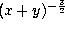

Taylor support the following command line options.
Usage: ./taylor [-name ODE_NAME] [-o outfile] [-doubledouble | -qd_real | -dd_real | -gmp -gmp_precision PRECISION] [-main | -header | -jet | -main_only] [-step STEP_CONTROL_METHOD] [-u | -userdefined] STEP_SIZE_FUNCTION_NAME ORDER_FUNCTION_NAME [-f77] [-sqrt] [-headername HEADER_FILE_NAME] [-debug] [-help] [-v] file
Let us explain them in detail.
-name ODE_NAME
This option specifies a
name for the system of ODEs. The output functions will have
the specified name appended. For example, if we run
taylor with the option -name lorenz, the output
procedures will be
taylor_step_lorenz and
taylor_coefficients_lorenz.
If name is not specified, taylor appends the input
filename (with non-alpha-numeric characters replaced by
_) to its output procedure names. In the case
when input is the standard input, the word _NoName
will be used.
-o outfile
This option specifies an output file. If not specified, taylor writes its output to the standard output.
-doubledouble
This option, combined with the -header flag, signals taylor to generate a header file to be compiled and linked with Keith Martin Briggs' doubledouble library (quadruple precision). The output code needs to be compiled by a C++ compiler. See
http://www.btexact.com/people/briggsk2/doubledouble.html
for more information about this library.
Note: If the -header flag is not used, this flag is ignored.
These two options, combined with the -header flag, force taylor to generate a header file for the quad-double library written by David Bailey et al. This library supports both the double-double precision (-dd_real flag) and the quad-double precision (-qd_real flag). The output code needs to be compiled by a C++ compiler. See
http://www.nersc.gov/~dhbailey/mpdist/mpdist.html
for more info.
Note: If the -header flag is not used, these flags are ignored.
-gmp
This option, combined with the -header flag, tells taylor to generate a header file for the GNU multiprecision library. Please note that the current version of GMP (version 3.1) does not contain implementation of transcendental mathematical functions. For more info, visit
http://www.swox.com/gmp/
Note: If the -header flag is not used, this flag is ignored.
-gmp_precision PRECISION
This flag is almost equivalent to -gmp; the only difference is when a main() program is generated. If -gmp is used the main program asks, at runtime, for the lenght (in bits) of the mantissa of the gmp floating point types. If -gmp_precision PRECISION is used, the main program will set the precision to PRECISION without prompting the user.
-main
Informs taylor to generate a very simple main() driving
routine. This option is equivalent to the options -main_only
-jet -step 1, so it produces a ``ready-to-run'' C file.
-header
This option tells taylor to output the header file. The header file contains the definition of the MY_FLOAT type (the type used to declare real variables), macro definitions for arithmetic operations and elementary mathematical function calls. In other words, this file header file is responsible for the kind of arithmetic used for the numerical integration. Hence, the flag -header must be combined with one of the flags -doubledouble, -gmp, -qd_real or -dd_real to produce a header file for the corresponding arithmetic. If none of these flags is specified, the standard double precision arithmetic will be used.
Moreover, if the flag -name ODE_NAME is also used, the header file will also contain the prototypes for the main functions of the Taylor integrator.
-jet
This option asks taylor to generate only the code that computes the taylor coefficients. The generated routine is
MY_FLOAT **taylor_coefficients_ODE_NAME(
MY_FLOAT t, /* input: value of the time variable */
MY_FLOAT *x, /* input: value of the state variables */
int order /* input: order of the taylor polynomial */
)
The code needs a header
file (defining the macros for the arithmetic)
in order to be compiled into object code. The default header
filename is taylor.h. The header filename can be changed
using -headername NAME (see below).
You can also use the -header option to include the necessary
macros in the output file.
-main_only
This option asks taylor to generate only
the main() driving routine. It is useful
when you want to separate different modules in
different files. The main driving routine has
to be linked with the step size control procedure
and the jet derivative procedure to run.
-step STEP_SIZE_CONTROL_METHOD
This option asks taylor to generate only the order and step size control code supplied by the package. If combined with the -main or -main_only flags, the value STEP_SIZE_CONTROL_METHOD is used in the main program to specify the step size control. The values of STEP_SIZE_CONTROL_METHOD can be 0 (fixed step and degree), 1, 2 and 3 (user defined step size control; in this case you have to code your own step size and degree control). If the flags -main and -main_only are not used, this value is ignored.
The generated procedure is also the main call to the numerical integrator:
int taylor_step_ODE_NAME(MY_FLOAT *time,
MY_FLOAT *xvars,
int direction,
int step_ctrl_method,
double log10abserr,
double log10relerr,
MY_FLOAT *endtime,
MY_FLOAT *stepused,
int *order)
This code needs the header file to be compiled (see the remarks
above). Given an initial condition (time,xvars), this
function computes a new point on the corresponding orbit. The meaning
of the parameters is explained in Section 5.3.
-userdefined STEP_SIZE_FUNCTION_NAME ORDER_FUNCTION_NAME
This flag is to specify the names of your own step size and order control functions. Then, the code produced with the flag -step includes the calls to your control functions; to use them, you must set step_ctrl_method to 3 (see Section 5.3.1).
For more details (like the parameters for these control functions) look at the source code produced by the -step flag.
-f77
This option forces taylor to output a C wrapper
routine for the function
taylor_step_ODE_NAME that can
be called from Fortran. This flag is meant to be
used with the -step flag, so the wrapper
will be stored in the same file as the step size
control. The prototype of the rutine is
void taylor_f77_ODE_NAME__(MY_FLOAT *time,
MY_FLOAT *xvars,
int *direction,
int *step_ctrl_method,
double *log10abserr,
double *log10relerr,
MY_FLOAT *endtime,
MY_FLOAT *stepused,
int *order,
int *flag)
The meaning of these parameters is explained in
Section 5.3.3.-sqrt
This option tells taylor to use the
function sqrt instead of pow
when evaluating terms like  .
The use of sqrt instead of pow produces
code that runs faster.
-headername HEADER_FILE_NAME
When taylor generates the code for the jet and/or step size control, it assumes that the header file will be named taylor.h. This flag forces taylor to change the name of the file to be included by the jet and/or step size control procedures to the new name HEADER_FILE_NAME. Of course, the user is then responsible for creating such a header file by combining the flags -o HEADER_FILE_NAME and -header. For instance,
taylor -name lz -o l.c -jet -step -headername l.h lorenz.eq1stores the code for the jet of derivatives and step size control in the file l.c. Moreover, l.c includes the header file l.h. This file has to be created separately:
taylor -name lz -o l.h -header
-debug or -v
Print some debug info to stderr.
-help (or -h)
Print a short help message.
The default options are set to produce a full C program, using the standard double precision of the computer:
-main_only -header -jet -step 1